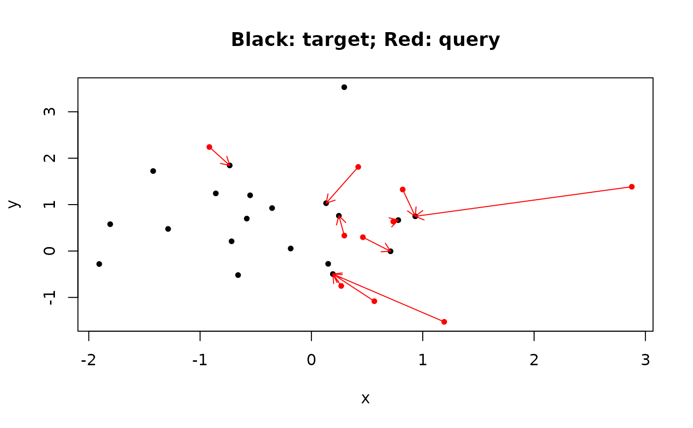

For each point in the query, find the nearest k points in target using
K-D tree.
Arguments
- target
a matrix with
nrows (number of points) and 2 or 3 columns, or amesh3dobject. This is the target point cloud where nearest distances will be sought- query
a matrix with
nrows (number of points) and 2 or 3 columns, or amesh3dobject. This is the query point cloud where for each point, the nearestkpoints intargetwill be sought.- k
positive number of nearest neighbors to look for
- leaf_size
the suggested leaf size for the
K-Dtree; default is16; larger leaf size will result in smaller depth- max_depth
maximum depth of the
K-Dtree; default is64
Value
A list of two matrices: index is a matrix of indices of
target points, whose distances are close to the corresponding
query point. If no point in target is found, then NA
will be presented. Each distance is the corresponding distance
from the query point to the target point.
Examples
# Find nearest point in B with the smallest distance for each point in A
library(ravetools)
n <- 10
A <- matrix(rnorm(n * 2), nrow = n)
B <- matrix(rnorm(n * 4), nrow = n * 2)
result <- vcg_kdtree_nearest(
target = B, query = A,
k = 1
)
plot(
rbind(A, B),
pch = 20,
col = c(rep("red", n), rep("black", n * 2)),
xlab = "x",
ylab = "y",
main = "Black: target; Red: query"
)
nearest_points <- B[result$index, ]
arrows(A[, 1],
A[, 2],
nearest_points[, 1],
nearest_points[, 2],
col = "red",
length = 0.1)

# ---- Sanity check ------------------------------------------------
nearest_index <- apply(A, 1, function(pt) {
which.min(colSums((t(B) - pt) ^ 2))
})
result$index == nearest_index
#> [,1]
#> [1,] TRUE
#> [2,] TRUE
#> [3,] TRUE
#> [4,] TRUE
#> [5,] TRUE
#> [6,] TRUE
#> [7,] TRUE
#> [8,] TRUE
#> [9,] TRUE
#> [10,] TRUE